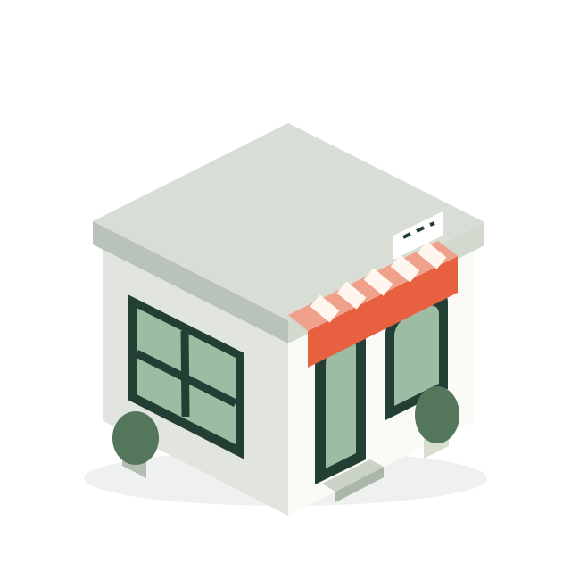
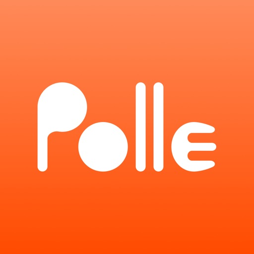

QUESTION↗
“A good Korean lunch
near Mangwon?”
ChatGPT·Gemini 추천 현황을 확인하고,
Google·카카오의 가게 정보를 고칩니다.

“A good Korean lunch
near Mangwon?”
 Google Maps
Google Maps서비스 이용 흐름
추천 현황을 확인하고 승인한 내용을 지도에 반영합니다.
01 / 무료 AI 추천 진단
등장률·평균 등장 순서와 주변 가게를 비교합니다.
참고 출처와 고쳐야 할 점의 개수도 보여 드립니다.
02 / 지도 정보 정비
소개·메뉴·가격·영업시간의 변경안을 만듭니다.
승인한 정보만 Google·카카오에 반영합니다.
03 / 같은 조건으로 재측정
같은 질문과 AI로 다시 측정합니다.
추천 결과와 실제 바뀐 정보를 함께 보여 드립니다.
소개·메뉴·가격·영업시간·공식 링크

한 줄 소개·영업시간·가격 정보·서비스





 Instagram
Instagram Facebook
Facebook 당근
당근 샤오홍슈
샤오홍슈 Apple 지도
Apple 지도 계정당 첫 진단 1회 무료.
정비를 신청하면 지도 연결과 정비안 승인을 이어갑니다.